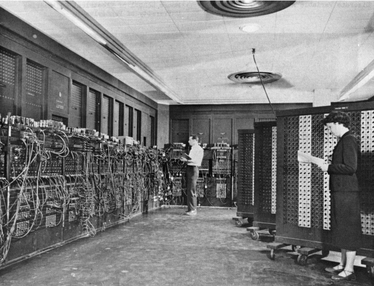
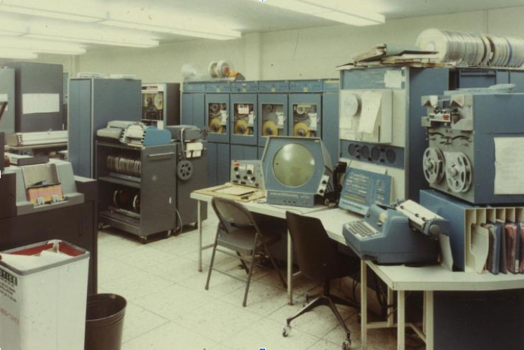
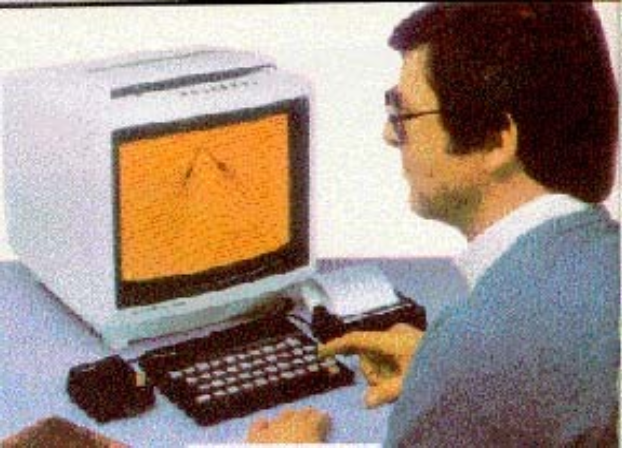
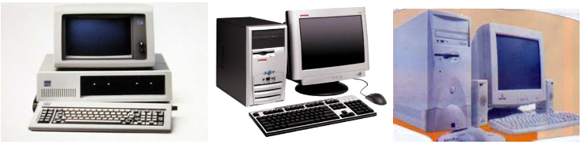

Primeira geração (1940–1956)
A primeira geração foi marcada por grandes dimensões, alto consumo de energia e dados
inseridos por cartões perfurados. O funcionamento destes primeiros computadores foi dado através de válvulas
termiônicas. Esta válvula é responsável por amplificar
ou modificar um sinal elétrico fundamental para o desenvolvimento das telecomunicações e da computação.
A primeira geração de computadores conseguia realizar milhares de
cálculos por segundo, mas só podiam realizar uma operação por vez e consumiam muita energia elétrica, eram
programadosem linguagem de máquina, e a entrada e saída dos dados era feita a partir de cartões perfurados.
O primeiro computador lançado foi o ENIAC (Electronic Numerical Integrator and Computer ou,
em português, computador
e integrador numérico eletrônico), em 1946, e contava com quase 18 mil tubos de vácuo (17.468).
Toda a programação era feita em código de máquina absoluto, ou, pior ainda, ligando circuitos
elétricos através da conexão de milhares de cabos a painéis de ligações para controlar as funções básicas da máquina. Linguagens de programação eram desconhecidas
(mesmo a linguagem de montagem era desconhecida). Ninguém tinha ouvido falar ainda de sistemas operacionais.

ENIAC, o primeiro computador
Segunda geração (1956–1963)
A segunda geração de computadores foi marcada por possuir dimensões menores e por agora possuir um peso de até 750 kg.
A segunda geração de computadores só foi possível com a invenção dos diodos e transistores. Isso marcou a substituição dos tubos de vácuo e um importante avanço no mundo da computação.
O diodo é um semicondutor utilizado para transformar a corrente alternada em corrente contínua. Já o transistor é um dispositivo que funciona como um regulador da corrente elétrica, o que permitiu a criação de computadores com maior eficiência energética.
Os computadores de segunda geração não se diferenciam apenas pela tecnologia e pelo menor tamanho, mas pela mudança na linguagem de programação, que passou para a linguagem assembly.

PDP-1, computador de segunda geração
Sobre a inserção de dados, o seu sistema de processamento era em lotes (Batch), e os cartões foram substituídos pelos rolos de fita perfurada.
Um exemplo de computador de segunda geração é o PDP-1, um dispositivo desenvolvido em 1960 para a pesquisa científica e onde o primeiro jogo de videogame da história foi jogado, o Spacewar!.
Terceira geração: circuitos integrados (1964-1971)
A terceira geração de computadores é marcada pela utilização de circuitos integrados(chip feito de silício que possui diferentes componentes que formam um “mini circuito”). substituindo assim os transistores, oque implicou em computadores com dimensões algumas vezes menores que seus predecessores.
Nessa geração a capacidade de processamento de cálculos numéricos aumenta exponencialmente e são criados os conceitos de memória virtual e multiprogramação(permite a execução de mais de uma função ao mesmo tempo, por conta da “partição” do processamento).
A partir dessa geração os dados de entrada são imputados através de periféricos e a saída começa a ser exibida em monitores.
Além de ser nessa geração que linguagens de alto nível começam a ser desenvolvidas como por exemplo C, COBOL e Pascal, e a partir dessa geração os sistemas operacionais começam a ser “popularizados”.Esses sistemas operacionais enfrentavam problemas porque esses computadores tentam englobar todas as áreas possíveis, sendo computadores tanto para sistemas grandes quanto pequenos, além de que, esses computadores tinham “retrocompatibilidade” e conseguiam ler os dados dos computadores de segunda e primeira geração e também funcionavam com periféricos, tudo isso resultava em um sistema operacional pesado com muitos bugs e milhares de linhas de código. Sendo alguns desses sistemas: OS/360, EXEC(usado no UNIVAC 1108), e MACE.
Boa parte desses sistemas tem uma funcionalidade parecida que é o gerenciamento e padronização dos sistemas para melhor comunicação entre os computadores. Porém alguns sistemas Operacionais possuem funções mais específicas como o NOS que é feito para comunicação do computador para com a rede e compartilhamento de dados, a sua maior diferença é que esse sistema foi concebido com objetivo de funcionar em múltiplos computadores ligados a uma rede.

A foto representa um computador da terceira geração.
Quarta geração (1971)
Na quarta geração, computadores deixaram de funcionar com circuitos integrados e incorporaram os microprocessadores. Um microprocessador é um circuito integrado, mas muito mais complexo, capaz de gerenciar todas as funções de um computador.
Nessa época a popularização dos disquetes permitiu separar o usuário e programador. Foi possível copiar softwares em disquetes e distribuí-los, sem a necessidade de realizar uma programação para cada máquina.

Imagem dos diversos tipos de computadores da quarta geração.
A quarta geração de computadores foi caracterizada também por incluir a memória RAM que tem como função armazenar os dados do programa temporariamente, enquanto o equipamento está ligado. E a memória ROM, que armazena os dados do programa permanentemente.
Esses tipos de computadores usam linguagens de programação de alto nível, como JavaScript, Python ou Java.
Com a evolução da capacidade de armazenamento e processamento dessa geração de computadores, aliado com seu tamanho e a diminuição dos custos de produção, possibilitou a sua produção em massa.
Os Macintoshes eram amplamente utilizados então em 1999, a Apple adotou um núcleo derivado do micronúcleo Mach da Universidade Carnegie Mellon que foi originalmente desenvolvido para substituir o núcleo do BDS UNIX (sistema operacional). Desse modo, o MAC OS X é um sistema operacional baseado no UNIX, embora com uma interface bastante distinta. Quando decidiu produzir um sucessor para o MS- -DOS, a Microsoft foi fortemente influenciada pelo sucesso do Macintosh. Ela produziu um sistema baseado em GUI chamado Windows, que originalmente era executado em cima do MS-DOS (MicroSoft Disk Operating System — Sistema operacional de disco da Microsoft).
Entretanto, começando em 1995, uma versão independente, Windows 95, foi lançada incorporando muitos aspectos de sistemas operacionais, usando o sistema MS-DOS subjacente apenas para sua inicialização e para executar velhos programas do MS- -DOS. Em 1998, uma versão ligeiramente modificada deste sistema, chamada Windows 98, foi lançada. Não obstante isso, tanto o Windows 95 como o Windows 98 ainda continham uma grande quantidade da linguagem de montagem de 16 bits da Intel.
Outro sistema operacional da Microsoft, o Windows NT (em que o NT representa New Technology), era compatível com o Windows 95 até um determinado nível, mas internamente, foi completamente reescrito. Era um sistema de 32 bits completo.
As versões subsequentes da Microsoft foram Windows 2000, chamada Windows XP. Ela teve uma vida muito mais longa (seis anos), basicamente substituindo todas as versões anteriores do Windows.
Windows Vista, ela contava com uma nova interface gráfica, segurança mais firme e muitos programas para os usuários novos ou atualizados.
Windows 7 uma versão nova e muito menos faminta de recursos do sistema operacional. O Windows 7 não introduziu muitos aspectos novos, mas era relativamente pequeno e bastante estável. Em menos de três semanas, o Windows 7 havia conquistado um mercado maior do que o Vista em sete meses.
Em 2012, a Microsoft lançou o sucessor, Windows 8, um sistema operacional com visual e sensação completamente diferentes, voltado para telas de toque.
Windows 10. Lançado em 29 de julho de 2015. Foi o sucessor do Windows 8.1. O Windows 10 foi apresentado como um sucessor do Windows 8.1, disponibilizando assim uma atualização gratuita para cópias de varejo de usuários do Windows 8 e Windows 8.1 através da Windows Store e também para usuários do Windows 7 via Windows Update no primeiro ano de lançamento
Outro competidor importante no mundo dos computadores pessoais é o UNIX (e os seus vários derivativos). O UNIX é mais forte entre servidores de rede e de empresas, mas também está presente em computadores de mesa, notebooks, tablets e smartphones. Em computadores baseados no x86, o Linux está se tornando uma alternativa popular ao Windows para estudantes e cada vez mais para muitos usuários corporativos.
O FreeBSD também é um derivado popular do UNIX, originado do projeto BSD em Berkeley. Todos os computadores Macintosh modernos executam uma versão modificada do FreeBSD (OS X). O UNIX também é padrão em estações de trabalho equipadas com chips RISC de alto desempenho. Seus derivados são amplamente usados em dispositivos móveis, os que executam iOS 7 ou Android.
![logo]()
/i238755.jpeg)